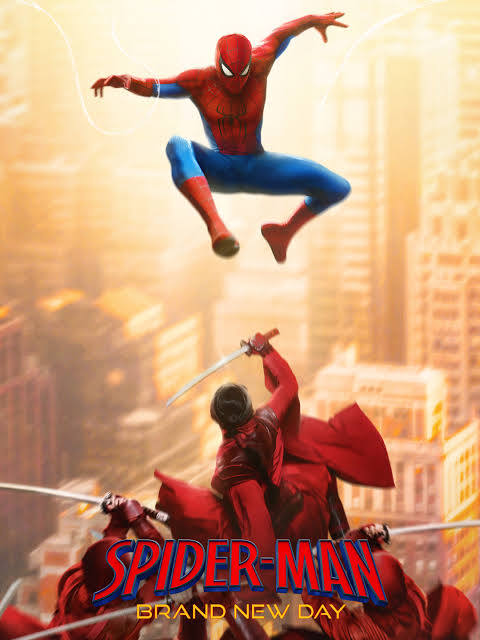

Spider-Man

Spider-Man's best-known secret identity is Peter Parker, a New Yorker who tries to balance ordinary responsibilities with being a superhero. The character first appeared in Marvel Comics' Amazing Fantasy No. 15 in 1962. In his classic origin story, Peter is bitten by a radioactive spider and develops unusual abilities. These include enhanced strength and agility, the ability to cling to surfaces, and a warning sense often called spider-sense. In many versions, Peter invents mechanical web-shooters to swing through the city and restrain criminals. His stories often focus on the responsibility he feels to use his powers to help others. Over the years, Spider-Man has appeared in comic books, movies, television shows, and video games.